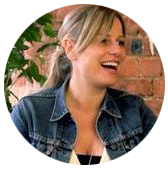

Yael was a joy to work with - hard working, passionate and smart . She's got a very rosy future ahead of her no matter what she turns her hand to.
Michael Acton Smith, CEO of Mind Candy and creator of Moshi Monsters

Yael is a fantastic UX-er, she has the perfect balance of creative thinking and IA skills. She is collaborative and friendly and fit in very well despite being freelance. The quality of her UX deliverables was excellent and I would have no qualms about working with her again... in fact I have tried several times to give her a permanent job!
Alice Forward, User Experience Director - Analogfolk

Working with Yaël at Mind Candy was an absolute pleasure. She was a creative, enthusiastic and passionate UX designer and a valuable member of our team. She came up with some great ideas to improve Moshi Monsters and the kids that she ran usability testing with loved being shown around the office by her. Yaël is a very motivated individual and she "gets things done" using a few of the agile techniques that she has mastered.
Greg Roodt, Software Engineer, Mind Candy

I worked closely with Yael during her time with us at AF and was an absolute pleasure! she's a great team player and her thinking behind everything she does is sold and always backed up, making life a lot easier for the design team. I really hope she's not too busy to work with her again at some point soon.
Jamie Lillywhite, Design Director, AnalogFolk

I had the pleasure of working with Yael on a number of projects at JustGiving. During her time, I found Yael to be a highly charged and driven individual and someone that could be trusted to contribute strongly to a project and to see it through.
Jamie Parkins, Charity Product Manager, JustGiving
I've worked with Yaël a number of times and she is always conscientious, emphatic and shows a great deal of empathy towards the user she is designing for and for which ever environment that she works in. Delivering a single solution misses the point of a user centred approach to design, but Yaël explores the problem space well and always presents a variety of valuable solutions.
Martyn Jones, Product Manager - Moshi Monsters - Mind Candy
It was an absolute pleasure to work with Yaël! She supported us on a high profile project, working to tight deadlines. She has the ability to quickly understand exactly what the requirements are, she asks all the right questions and is able to create clear user flows even in complex and challenging scenarios. She is a real professional with great UX knowledge and experience – and great personality!
Kati Kuusisto, Digital Editor, Cancer Research
Yaël was a delight to work with. She's a clear, strategic thinker who is very knowlegable when it comes to user-experience design. Within only a couple of days she managed to deliver tip-top results so I would definitely hire her again!
Sarah Parker, Client Services Director, Story Worldwide
Yaël is a talented user experience designer, I’ve worked with her on several projects whilst at JustGiving and each time she has been a pleasure to work with. Yaël has excellent communication skills, is very approachable with bags of enthusiasm and is an asset to any team. She brings with her the most amazing personality; she is bubbly & friendly and great fun to work with. I’ll miss working with her a great deal.
Sonal Patel, Front End Developer, JustGiving

Managing Yaël was an absolute pleasure. She's bright, enthusiastic and pro-active. Every task she was given she attacked thoroughly and quickly. She worked well with the rest of the team, inspiring them and pushing them and worked on solo projects with the same professionalism. Great quality of work and great attitude.
Ben Geliher, Lead Producer, Mind Candy

Yaël is not only a great team player and an extremely talented UX designer but generally a lot of fun to be around with. I enjoyed working with her improving the UX experience at Moshi Monsters and developing interfaces for new features. I can whole heartily recommend her and wish her the best for any future endeavours.
Axel Gutschenreiter, Senior Art Designer, Mind Candy
Yaël brought a lot of much needed UX focus to our team when she joined the company. Pragmatic and eager, she's excellent at bringing aspects of a product into focus and catching the details that make the difference between an average product and a great one. Very personable and good in a discussion, and always open with the reasoning behind UX suggestions and direction which, from a developers perspective, makes her very valuable and easy to work with. While working together, Yaël embraced agile and worked in step with our development team resulting in much improved version 1 products and helped our development team become much more sensitive to UX.
David Whitney, Senior Software Developer, JustGiving
I'm truly going to miss working with Yaël. She has turned her bright, friendly personality into her greatest asset as a User experience designer: her ability to communicate with anyone in the business, from developers to fellow designers to the leadership team is amazing. A talent for engaging people works with users too, giving her the empathy necessary for great user research. Yaël combines this with a strong instinct for design and usability, and a very collaborative approach to work. She is an asset to any business and to the UX community. I hope our careers cross paths again!
Clara Teoh, UX Designer, JustGiving
Working with Yael is a pleasure and I hope to work with her again in the future. She is super quick to come up with ideas and knocks out specs in a matter of minutes. She really "gets" tech which definitely makes my life easier but also I believe we got the best out of projects we worked on because of that reason.
Mel Cheng, Freelance Technical Lead, AnalogFolk
I really enjoy working with Yaël. She is a real team player, making sure that the right people are involved in a project and kept up-to-date with developments. She is great at explaining the reasons behind her decisions, which are always user-focused and logical. Yaël has taught me a lot about UX, and works hard to make the Agile process work for all involved. She is really passionate about her job, and keen to learn from others too. She listens to other opinions, questions why decisions have been made, and works collaboratively to make sure the best outcome is reached for the user. On top of her professional strengths, Yaël is a lot of fun to work with. She doesn’t take herself too seriously and always has a smile on her face.
Melanie Clayton, Content Editor, JustGiving
Back to the top of the page